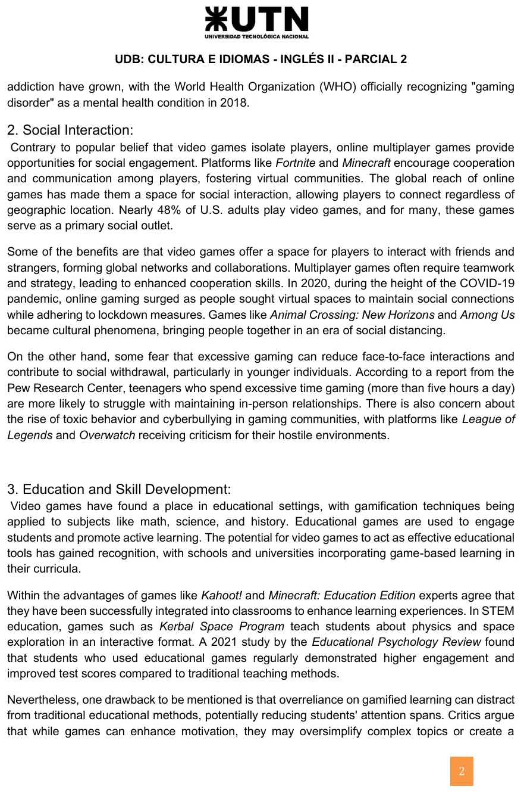
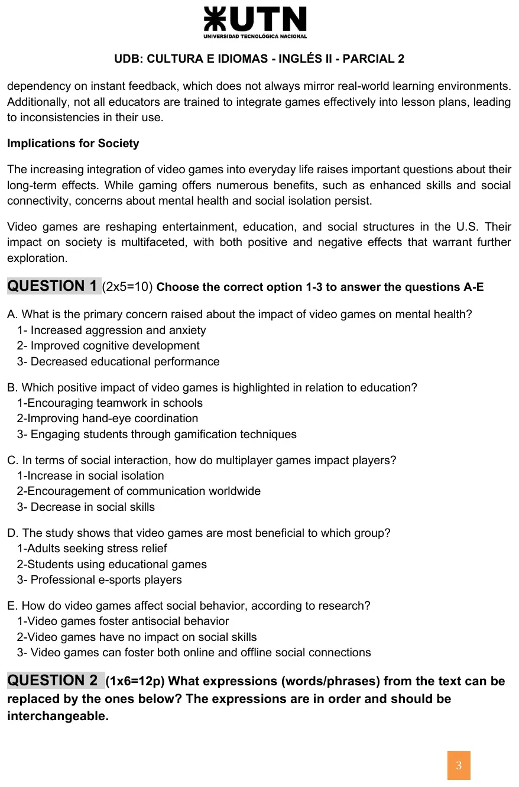
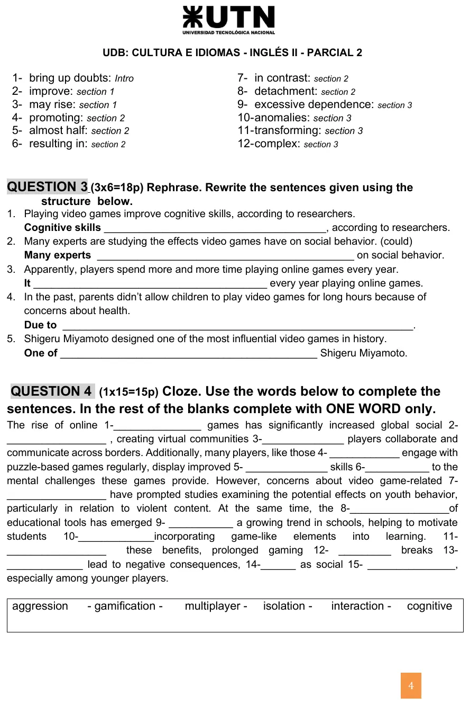

2° parcial, 2024 (videojuegos y sociedad)
2° parcial, 2024
Enunciado







Propuesta de respuesta
Respuesta no verificada. La propuso Luta Studios con inteligencia artificial y ningún docente la revisó. Puede tener errores.
Las respuestas salen del texto de la hoja. Al lado de cada una va la parte del texto que la sostiene.
Question 1
| Pregunta | Opción | Dónde lo dice el texto |
|---|---|---|
| A | 1, Increased aggression and anxiety | Sección 1, have been linked to heightened aggression and nervousness y can increase aggressive thoughts |
| B | 3, Engaging students through gamification techniques | Sección 3, gamification techniques being applied to subjects like math y Educational games are used to engage students |
| C | 2, Encouragement of communication worldwide | Sección 2, encourage cooperation and communication among players y allowing players to connect regardless of geographic location |
| D | 2, Students using educational games | Sección 3, el estudio de 2021 encontró que students who used educational games regularly demonstrated higher engagement and improved test scores |
| E | 3, Video games can foster both online and offline social connections | Sección 2, interact with friends and strangers y bringing people together. La 1 va contra Contrary to popular belief that video games isolate players, y la 2 contra todo lo que la sección cuenta |
Question 2
Cada expresión se busca en la sección que indica la hoja y en el orden de la lista. La del texto tiene que poder ir en su lugar.
| N° | Expresión de la hoja | En el texto | Oración del texto |
|---|---|---|---|
| 1 | bring up doubts | raise concerns | others raise concerns about their influence on behavior |
| 2 | improve | enhance | puzzle and strategy games, enhance cognitive skills |
| 3 | may rise | can increase | frequent exposure to violent video games can increase aggressive thoughts |
| 4 | promoting | fostering | fostering virtual communities |
| 5 | almost half | nearly 48% | Nearly 48% of U.S. adults play video games |
| 6 | resulting in | leading to | leading to enhanced cooperation skills |
| 7 | in contrast | on the other hand | On the other hand, some fear that excessive gaming… |
| 8 | detachment | withdrawal | contribute to social withdrawal |
| 9 | excessive dependence | overreliance | overreliance on gamified learning |
| 10 | anomalies | inconsistencies | leading to inconsistencies in their use |
| 11 | transforming | reshaping | Video games are reshaping entertainment, education, and social structures |
| 12 | complex | multifaceted | Their impact on society is multifaceted |
Question 3
Cognitive skills are improved by playing video games, according to researchers.Es voz pasiva. El objeto,cognitive skills, pasa a ser sujeto, y el verbo va conaremás el participio. Lo que hacía la acción,playing video games, entra conby.Many experts could be studying the effects video games have on social behavior.Es hedging con un modal.Could bemás el verbo con -ing mantiene el continuo deare studyingy lo presenta como algo posible. Se puede sumarthatdespués deeffects.It seems that players spend more and more time every year playing online games.Apparentlypasa a la forma de hedging conIt. También valeIt appears that. El resto de la oración queda igual.Due to concerns about health, parents didn't allow children to play video games for long hours in the past.Due tova seguido de un sustantivo, así que entraconcerns about healthy no una oración. También valeDue to health concerns.One of the most influential video games in history was designed by Shigeru Miyamoto.Es voz pasiva en pasado simple,wasmásdesigned, con el autor después deby.
Question 4
| Hueco | Palabra | Por qué |
|---|---|---|
| 1 | multiplayer, de la caja | online multiplayer games, como en la sección 2 |
| 2 | interaction, de la caja | global social interaction. Después de dos adjetivos va un sustantivo |
| 3 | where | virtual communities where players collaborate. Abre la parte que dice dónde pasa lo que sigue |
| 4 | who | those who engage with puzzle-based games. Refiere a personas. También vale that |
| 5 | cognitive, de la caja | improved cognitive skills. Antes de skills va un adjetivo |
| 6 | due | due to the mental challenges. Da la causa con un sustantivo. También valen thanks y owing |
| 7 | aggression, de la caja | video game-related aggression |
| 8 | gamification, de la caja | the gamification of educational tools |
| 9 | as | has emerged as a growing trend |
| 10 | by | by incorporating game-like elements. Dice cómo, con el verbo en -ing |
| 11 | Despite | Despite these benefits. Contraste seguido de un sustantivo |
| 12 | without | prolonged gaming without breaks |
| 13 | can | can lead to negative consequences. Antes de lead va un modal. También valen may y could |
| 14 | such | such as social isolation. Introduce un ejemplo |
| 15 | isolation, de la caja | social isolation, como en el cierre del texto |
Respuesta no verificada. Puede tener errores.
Se armó con la página del 2° parcial, secciones «Cómo se resuelve cada tipo de consigna», «Parafrasear», «Voz pasiva», «Causa», «Hedging», «Conectores», «Clases de palabras y sufijos» y «Vocabulario del tema».
Quedó en duda: No hay clave publicada de este parcial. La hoja «PART 1A READING KEY» del Drive no dice de quién es y no se usó. El año 2024 sale de la fecha del PDF, porque el archivo no la trae. Los puntajes de la hoja no cierran. La Question 2 dice «1x6=12p» con doce expresiones y la Question 3 dice «3x6=18p» con cinco oraciones. En la 1 E, el texto habla de amigos y desconocidos y de juntar gente, pero no dice «offline» con esas palabras. La 3 es la que mejor encaja. En la 2, el ítem 3 (may rise) no lleva objeto y can increase sí lo lleva en el texto. Es lo más cercano de la sección 1. También podría aceptarse may… increase del tercer párrafo de esa sección. En la 2, el ítem 4 también podría ser encourage. Elegí fostering porque tiene la misma forma en -ing que promoting. En la 2, los ítems 11 y 12 están en «Implications for Society», que la hoja cuenta dentro de la sección 3. En la 3.1, la oración de la hoja dice improve y con ese sujeto debería decir improves. En la 4, los huecos 3, 4, 6 y 13 admiten más de una palabra.
¿Cómo te fue?
Marcá cada tema del examen.
- LecturaParte 1-B, lectura, en Final
- Expresiones equivalentesExpresiones equivalentes (Question 2), en 2° parcial
- Reformulación2° parcial
- ClozeCloze con caja, en 1° parcial